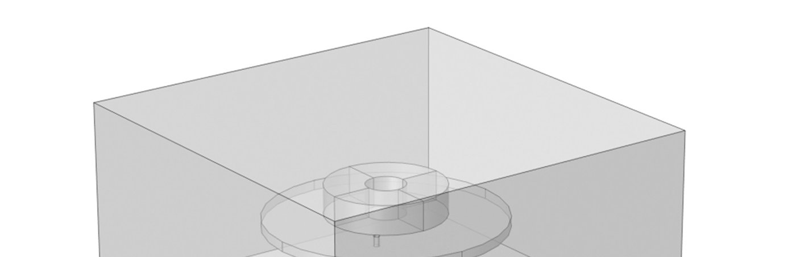
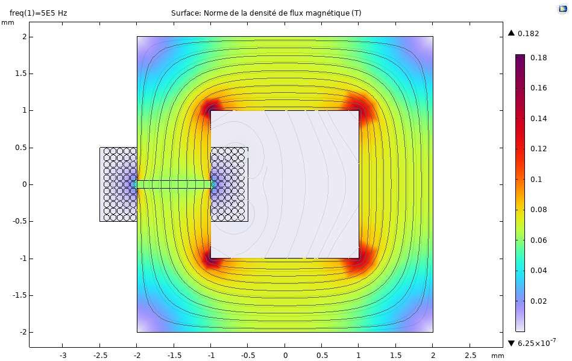
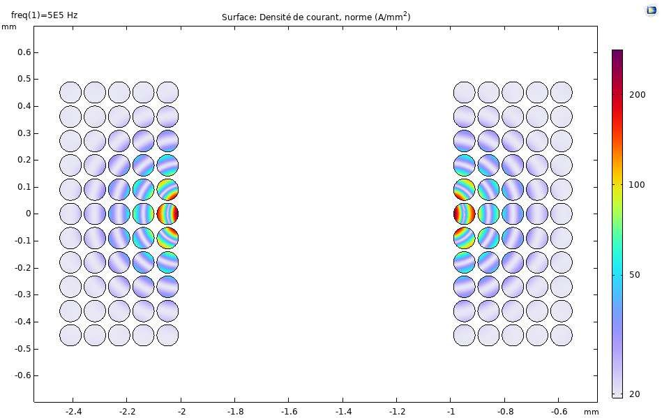
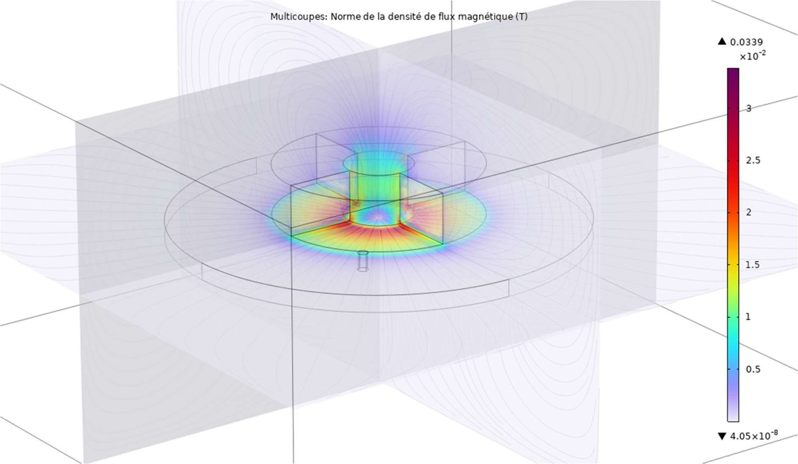
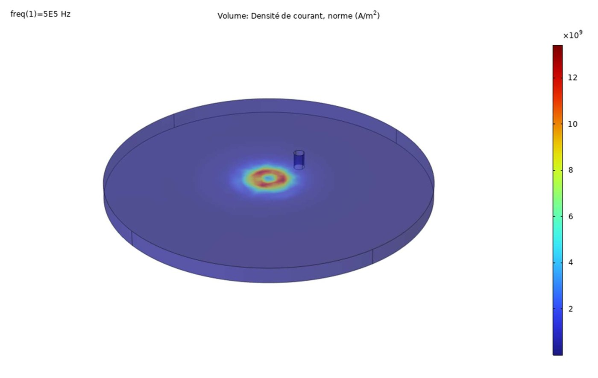
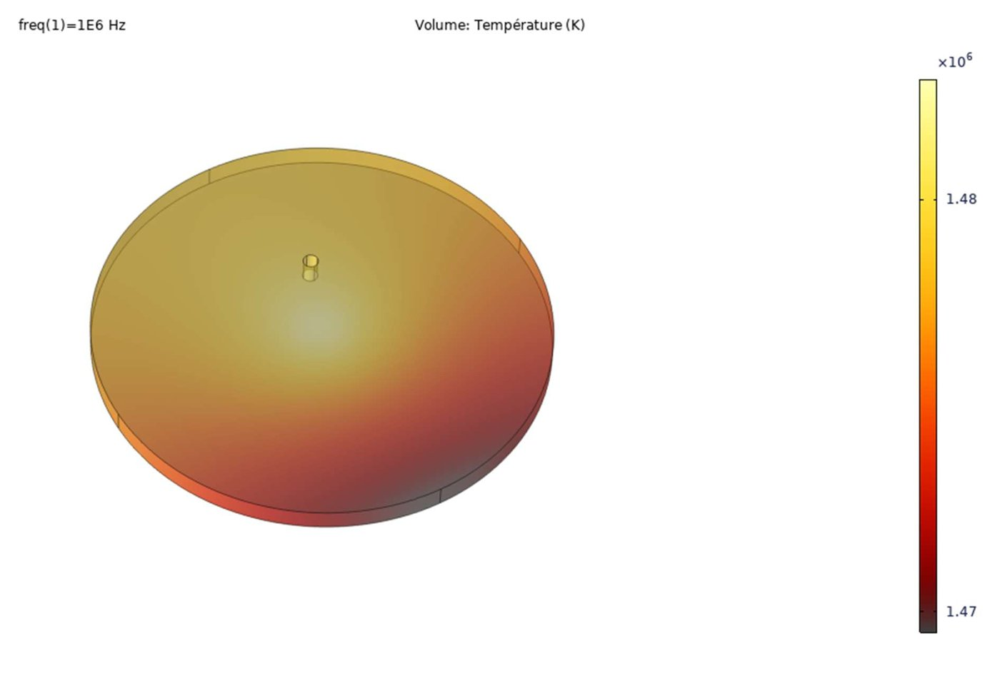

01Contexte
Projet de modélisation multiphysique : simuler un contrôle non destructif par thermographie infrarouge active. Une bobine crée des courants de Foucault dans une plaque d'aluminium. Ces courants chauffent la plaque, et un défaut caché perturbe la chaleur en surface, ce qu'une caméra infrarouge peut repérer.

02Mon rôle
Projet en binôme : modélisation, simulations et rapport réalisés à deux.
03Prise en main : la bobine
- Circuit magnétique bobiné en 2D, en régime permanent : répartition du flux, potentiel vecteur.
- Étude en fréquence (10 kHz à 1 MHz) : répartition du courant dans les fils de la bobine selon la fréquence et le diamètre des fils (effet de peau).


04Le contrôle non destructif
Couplage de deux physiques : électromagnétisme (courants de Foucault) et thermique (échauffement par effet Joule). Les courants se concentrent autour du défaut, ce qui crée un point chaud visible en surface.



05Résultats et limites
- La partie électromagnétique de notre modèle est cohérente.
- Le principe de détection est confirmé : les courants et la chaleur se concentrent autour du défaut.
Ce qui n'a pas marché : sur notre propre modèle, le couplage thermique donnait des températures nulles. Nous avons testé le courant, la fréquence, le maillage et le type d'étude, sans succès. Les résultats thermiques présentés viennent donc du modèle de référence fourni par l'enseignante.